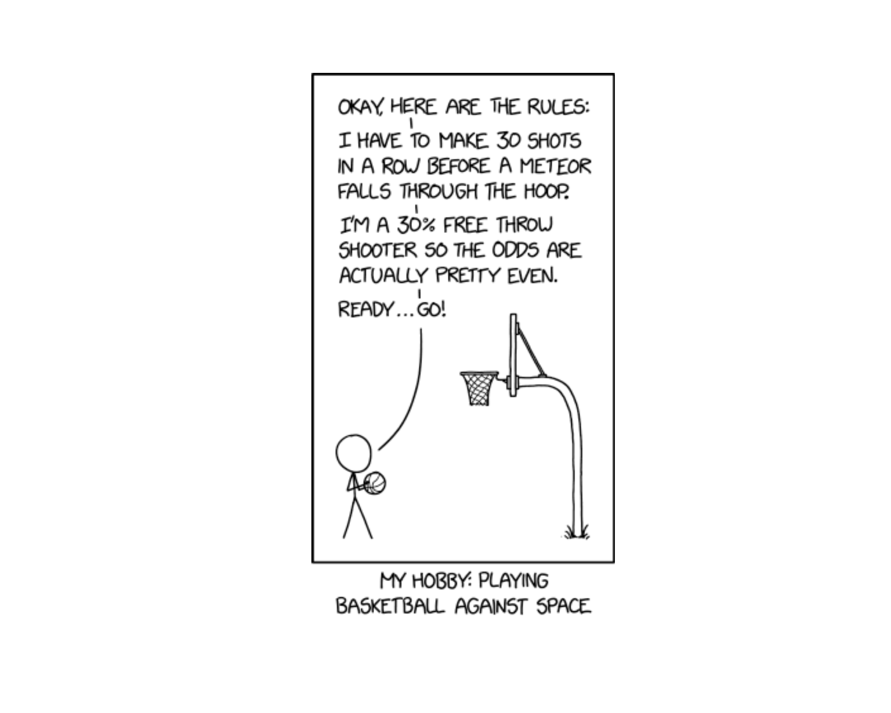
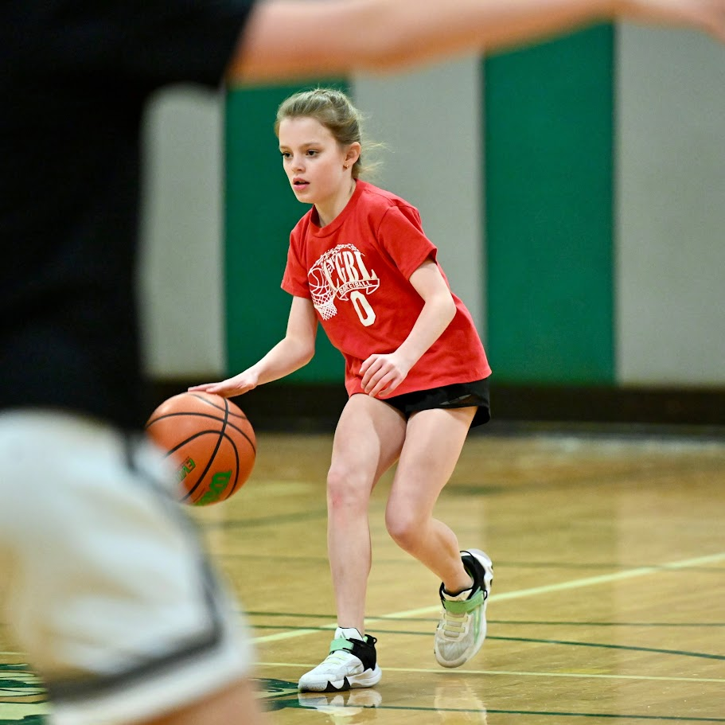
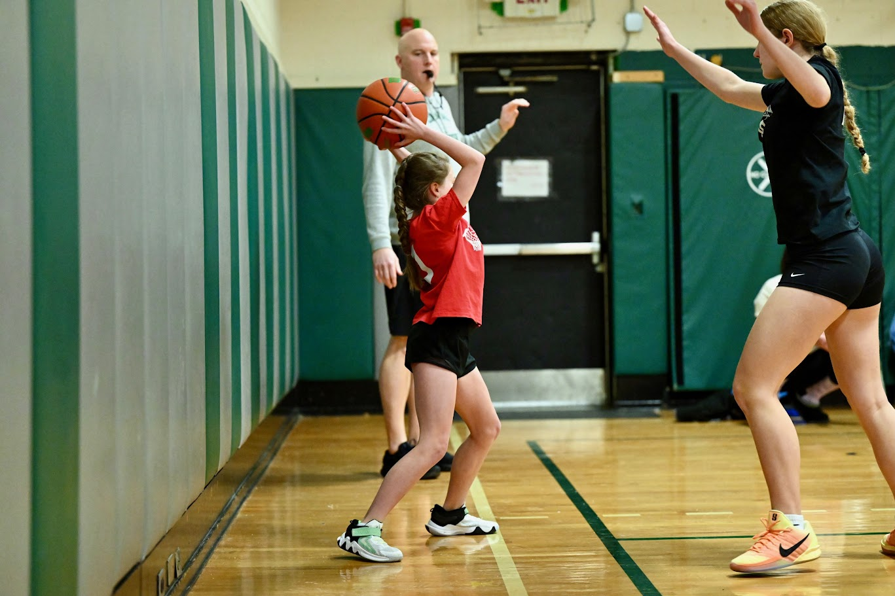
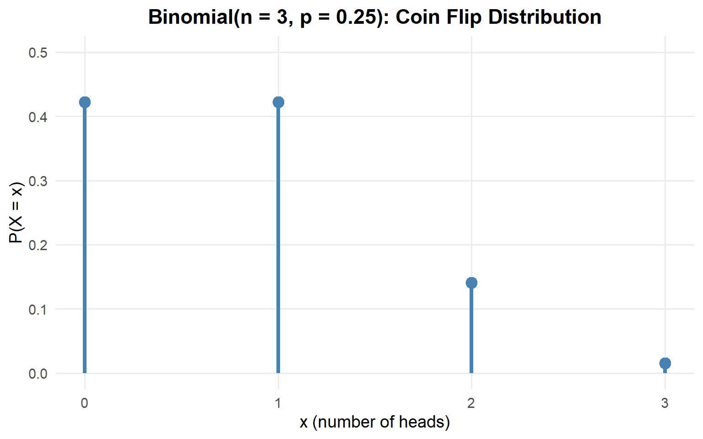

Lesson 10: Binomial Distribution

What We Did: Lessons 6, 7, 8 & 9
Quick Review: Probability Basics (Lesson 6)
NoteKey Concepts from Lesson 6
Sample Spaces and Events:
- Sample space \(S\) = set of all possible outcomes
- Event = subset of the sample space
- Operations: Union (\(A \cup B\)), Intersection (\(A \cap B\)), Complement (\(A^c\))
Kolmogorov Axioms:
- \(P(A) \geq 0\)
- \(P(S) = 1\)
- For mutually exclusive events: \(P(A \cup B) = P(A) + P(B)\)
Key Rules:
- Complement Rule: \(P(A^c) = 1 - P(A)\)
- Addition Rule: \(P(A \cup B) = P(A) + P(B) - P(A \cap B)\)
Quick Review: Conditional Probability (Lesson 7)
NoteKey Concepts from Lesson 7
Conditional Probability: \[P(A \mid B) = \frac{P(A \cap B)}{P(B)}\]
Multiplication Rule: \[P(A \cap B) = P(A) \cdot P(B \mid A) = P(B) \cdot P(A \mid B)\]
Law of Total Probability: \[P(A) = P(B) \cdot P(A \mid B) + P(B^c) \cdot P(A \mid B^c)\]
Bayes’ Theorem: \[P(B \mid A) = \frac{P(B) \cdot P(A \mid B)}{P(B) \cdot P(A \mid B) + P(B^c) \cdot P(A \mid B^c)}\]
Quick Review: Counting & Independence (Lesson 8)
NoteKey Concepts from Lesson 8
Multiplication Principle: If an experiment has stages with \(n_1, n_2, \ldots, n_k\) outcomes, the total outcomes are \(n_1 \times n_2 \times \cdots \times n_k\).
Counting Formulas:
| With Replacement | Without Replacement | |
|---|---|---|
| Ordered | \(n^k\) | \(P(n,k) = \frac{n!}{(n-k)!}\) |
| Unordered | \(\binom{n+k-1}{k}\) | \(\binom{n}{k} = \frac{n!}{k!(n-k)!}\) |
Independence:
- \(A\) and \(B\) are independent if \(P(A \cap B) = P(A) \cdot P(B)\)
- Equivalently: \(P(A \mid B) = P(A)\)
- Independent \(\neq\) Mutually Exclusive!
Quick Review: Discrete Random Variables (Lesson 9)
NoteKey Concepts from Lesson 9
Random Variables:
- A random variable \(X\) assigns a numerical value to each outcome in a sample space
- Discrete RVs take finite or countably infinite values
Probability Mass Function (PMF):
\[p(x) = P(X = x)\]
- Properties: \(p(x) \geq 0\) and \(\sum_{\text{all } x} p(x) = 1\)
Cumulative Distribution Function (CDF):
\[F(x) = P(X \leq x) = \sum_{y \leq x} p(y)\]
- Key property: CDF is a step function for discrete RVs
What We’re Doing: Lesson 10
Objectives
- Verify binomial conditions for counts of successes
- Compute binomial PMF/CDF values
- Interpret binomial mean and variance
Required Reading
Devore, Section 3.4
Break!
Reese



Cal
Cal and Reese

Finishing Lesson 9: Expected Value and Variance
We didn’t get to cover Expected Value and Variance in Lesson 9, so let’s complete that now using our running example.
Recall: The Coin Flip Example
NoteExample: 3 Fair Coin Flips
A cadet flips a fair coin 3 times.
Let \(X\) = number of heads (out of 3 flips).
PMF (from Lesson 9):
| \(x\) | 0 | 1 | 2 | 3 |
|---|---|---|---|---|
| \(p(x)\) | \(\frac{1}{8}\) | \(\frac{3}{8}\) | \(\frac{3}{8}\) | \(\frac{1}{8}\) |
| \(F(x)\) | \(\frac{1}{8}\) | \(\frac{1}{2}\) | \(\frac{7}{8}\) | \(1\) |
Expected Value
What if we wanted to know the ‘expected’ number of heads in our coin flip example?
ImportantDefinition: Expected Value
The expected value (or mean) of a discrete random variable \(X\) is:
\[E(X) = \mu = \sum_{\text{all } x} x \cdot p(x)\]
Interpretation: The expected value is the long-run average — if you repeated the experiment many times, the average value of \(X\) would approach \(E(X)\).
WarningImportant Note
The expected value is NOT necessarily a value that \(X\) can actually take!
Expected Value Calculation
\[E(X) = \sum_{x=0}^{3} x \cdot p(x)\]
\[= 0 \cdot \frac{1}{8} + 1 \cdot \frac{3}{8} + 2 \cdot \frac{3}{8} + 3 \cdot \frac{1}{8}\]
\[= 0 + \frac{3}{8} + \frac{6}{8} + \frac{3}{8} = \frac{12}{8} = 1.5\]
Interpretation: On average, you will get 1.5 heads out of 3 flips. Over many repetitions of this experiment, the average number of heads will approach 1.5.
Note: 1.5 is not a possible value of \(X\) (you can’t flip 1.5 heads), but it’s still a meaningful measure of center.
Variance and Standard Deviation
What if we wanted to know how much the number of heads varies between experiments from the expected value?
ImportantDefinition: Variance
The variance of a discrete random variable \(X\) is:
\[Var(X) = \sigma^2 = E[(X - \mu)^2] = \sum_{\text{all } x} (x - \mu)^2 \cdot p(x)\]
Shortcut formula: \[Var(X) = E(X^2) - [E(X)]^2\]
ImportantDefinition: Standard Deviation
The standard deviation is:
\[SD(X) = \sigma = \sqrt{Var(X)}\]
Interpretation: Variance and SD measure how spread out the distribution is around the mean.
Variance Calculation: Method 1 (Definition)
\[Var(X) = \sum_{\text{all } x} (x - \mu)^2 \cdot p(x)\]
With \(\mu = 1.5\):
\[ \begin{aligned} Var(X) &= (0 - 1.5)^2 \cdot \frac{1}{8} + (1 - 1.5)^2 \cdot \frac{3}{8} + (2 - 1.5)^2 \cdot \frac{3}{8} + (3 - 1.5)^2 \cdot \frac{1}{8} \\[6pt] &= (2.25) \cdot \frac{1}{8} + (0.25) \cdot \frac{3}{8} + (0.25) \cdot \frac{3}{8} + (2.25) \cdot \frac{1}{8} \\[6pt] &= \frac{2.25}{8} + \frac{0.75}{8} + \frac{0.75}{8} + \frac{2.25}{8} \\[6pt] &= \frac{6}{8} = 0.75 \end{aligned} \]
Variance Calculation: Method 2 (Shortcut Formula)
\[Var(X) = E(X^2) - [E(X)]^2\]
Step 1: Find \(E(X^2)\)
\[ \begin{aligned} E(X^2) &= \sum_{x=0}^{3} x^2 \cdot p(x) \\[6pt] &= 0^2 \cdot \frac{1}{8} + 1^2 \cdot \frac{3}{8} + 2^2 \cdot \frac{3}{8} + 3^2 \cdot \frac{1}{8} \\[6pt] &= 0 + \frac{3}{8} + \frac{12}{8} + \frac{9}{8} = \frac{24}{8} = 3 \end{aligned} \]
Step 2: Apply the shortcut formula
\[Var(X) = E(X^2) - [E(X)]^2 = 3 - (1.5)^2 = 3 - 2.25 = 0.75\]
Standard Deviation
\[SD(X) = \sqrt{Var(X)} = \sqrt{0.75} \approx 0.866\]
Interpretation: The number of heads typically varies by about 0.87 from the average of 1.5.
Summary: Coin Flip Example Complete
NoteComplete Analysis: 3 Fair Coin Flips
PMF and CDF:
| \(x\) | 0 | 1 | 2 | 3 |
|---|---|---|---|---|
| \(p(x)\) | \(\frac{1}{8}\) | \(\frac{3}{8}\) | \(\frac{3}{8}\) | \(\frac{1}{8}\) |
| \(F(x)\) | \(\frac{1}{8}\) | \(\frac{1}{2}\) | \(\frac{7}{8}\) | \(1\) |
Summary Statistics:
- \(E(X) = 1.5\) heads
- \(Var(X) = 0.75\)
- \(SD(X) \approx 0.866\) heads
The Takeaway for Today
NoteKey Concepts: Binomial Distribution
The Four Binomial Conditions (BINS):
- Binary outcomes: Each trial has exactly two outcomes (success/failure)
- Independent trials: The outcome of one trial doesn’t affect others
- Number of trials is fixed: You know \(n\) in advance
- Same probability: The probability of success \(p\) is constant for each trial
Key Formulas:
- PMF: \(P(X = x) = \binom{n}{x} p^x (1-p)^{n-x}\)
- Mean: \(E(X) = np\)
- Variance: \(Var(X) = np(1-p)\)
R Functions:
dbinom(x, size = n, prob = p)— PMF: \(P(X = x)\)pbinom(x, size = n, prob = p)— CDF: \(P(X \leq x)\)
Lets Re-Think Our Coin Flipping Experiment
NoteBoard Work: From Coin Flips to the Binomial Formula
Remember our coin flipping example from Lesson 9? We had \(n = 3\) flips of a fair coin (\(p = 0.5\)).
What if \(p = 0.25\) instead of \(0.5\)?
| Outcome | Probability | = |
|---|---|---|
| HHH | \((.25)(.25)(.25)\) | \(\frac{1}{64}\) |
| HHT | \((.25)(.25)(.75)\) | \(\frac{3}{64}\) |
| HTH | \((.25)(.75)(.25)\) | \(\frac{3}{64}\) |
| HTT | \((.25)(.75)(.75)\) | \(\frac{9}{64}\) |
| THH | \((.75)(.25)(.25)\) | \(\frac{3}{64}\) |
| THT | \((.75)(.25)(.75)\) | \(\frac{9}{64}\) |
| TTH | \((.75)(.75)(.25)\) | \(\frac{9}{64}\) |
| TTT | \((.75)(.75)(.75)\) | \(\frac{27}{64}\) |
- Find \(P(X = x)\) by listing all outcomes
| \(x\) | 0 | 1 | 2 | 3 |
|---|---|---|---|---|
| \(p(x)\) | \(\frac{27}{64}\) | \(\frac{27}{64}\) | \(\frac{9}{64}\) | \(\frac{1}{64}\) |
That’s terrible… let’s make this into a formula…
How many ways can we select \(x\) heads from \(n\) coin flips?
\[\binom{n}{x}\]
What’s the probability of each of those arrangements happening?
\[p^x (1-p)^{n-x}\]
Putting it together:
\[P(X = x) = \binom{n}{x} p^x (1-p)^{n-x}\]
This is known as a Binomial Experiment
The Setup
Imagine an experiment where:
- You perform the same action \(n\) times (like n coin flips)
- Each trial has only two possible outcomes: success or failure (or heads or tails)
- The probability of success \(p\) stays the same for each trial (like .25)
- The trials are independent of each other (like coin flips are)
This is called a binomial experiment.
The Four Binomial Conditions (BINS)
ImportantBINS: Four Conditions for a Binomial Experiment
- Binary outcomes: Each trial results in one of exactly two outcomes
- Success (what we’re counting) or Failure
- Independent trials: The outcome of one trial doesn’t affect other trials
- Knowing one result doesn’t change probabilities for other trials
- Number of trials is fixed: We know \(n\) before the experiment starts
- We’re not stopping when something happens
- Same probability: \(P(\text{success}) = p\) is constant across all trials
- The probability doesn’t change from trial to trial
If all four conditions are met, then \(X\) = number of successes follows a binomial distribution.
Examples: Check BINS
Scenario 1: A cadet attempts 10 free throws. Each shot has a 70% chance of going in, and the results of each shot are independent. Let \(X\) = number of made shots.
NoteCheck BINS
- Binary? ✓ Each shot is either made (success) or missed (failure)
- Independent? ✓ Each shot’s outcome doesn’t affect the others
- Number fixed? ✓ We know there will be exactly 10 shots
- Same probability? ✓ Each shot has 70% success probability
\(X \sim \text{Binomial}(n=10, p=0.7)\)
Scenario 2: Draw 5 cards from a deck without replacement. Let \(X\) = number of hearts.
NoteCheck BINS
- Binary? ✓ Each card is either a heart (success) or not (failure)
- Independent? ✓ Each draw is independent… wait, is it?
- Number fixed? ✓ We know there will be exactly 5 draws
- Same probability? ✗ The probability changes with each draw
- First draw: \(P(\text{heart}) = 13/52\)
- If first was a heart: \(P(\text{heart on second}) = 12/51\)
- If first was not a heart: \(P(\text{heart on second}) = 13/51\)
Not binomial.
Scenario 3: Roll a die until you get a 6. Let \(X\) = number of rolls.
NoteCheck BINS
- Binary? ✓ Each roll is either a 6 (success) or not (failure)
- Independent? ✓ Each roll is independent
- Number fixed? ✗ We don’t know how many rolls it will take
- Same probability? ✓ Each roll has \(p = 1/6\)
Not binomial.
The Binomial Distribution
The Binomial PMF
ImportantThe Binomial PMF
If \(X \sim \text{Binomial}(n, p)\), then the probability of exactly \(x\) successes is:
\[P(X = x) = \binom{n}{x} p^x (1-p)^{n-x}, \quad x = 0, 1, 2, \ldots, n\]
where:
- \(\binom{n}{x}\) = number of ways to arrange \(x\) successes among \(n\) trials
- \(p^x\) = probability of \(x\) successes (each with probability \(p\))
- \((1-p)^{n-x}\) = probability of \(n-x\) failures (each with probability \(1-p\))
Using the PMF: Our Coin Flip Example
Let’s verify our earlier work using the formula. For \(n = 3\) flips with \(p = 0.25\):
\[P(X = 0) = \binom{3}{0} (0.25)^0 (0.75)^3 = 1 \cdot 1 \cdot \frac{27}{64} = \frac{27}{64}\]
\[P(X = 1) = \binom{3}{1} (0.25)^1 (0.75)^2 = 3 \cdot \frac{1}{4} \cdot \frac{9}{16} = \frac{27}{64}\]
\[P(X = 2) = \binom{3}{2} (0.25)^2 (0.75)^1 = 3 \cdot \frac{1}{16} \cdot \frac{3}{4} = \frac{9}{64}\]
\[P(X = 3) = \binom{3}{3} (0.25)^3 (0.75)^0 = 1 \cdot \frac{1}{64} \cdot 1 = \frac{1}{64}\]
These match what we found by enumeration!
What about \(P(X \leq 2)\)?
\[P(X \leq 2) = \sum_{x=0}^{2} \binom{3}{x} (0.25)^x (0.75)^{3-x} = P(X=0) + P(X=1) + P(X=2)\]
\[= \frac{27}{64} + \frac{27}{64} + \frac{9}{64} = \frac{63}{64}\]
Visualizing the Binomial Distribution

Binomial Calculations in R
The dbinom() Function: PMF
The dbinom() function computes \(P(X = x)\) — the probability of exactly \(x\) successes.
# P(X = 2) when n = 4 and p = 0.7
dbinom(2, size = 4, prob = 0.7)[1] 0.2646Compare to our hand calculation: \(\binom{4}{2}(0.7)^2(0.3)^2 = 6 \times 0.49 \times 0.09 = 0.2646\) ✓
The pbinom() Function: CDF
The pbinom() function computes \(P(X \leq x)\) — the probability of \(x\) or fewer successes.
# P(X ≤ 2) when n = 4 and p = 0.7
pbinom(2, size = 4, prob = 0.7)[1] 0.3483This equals \(P(X=0) + P(X=1) + P(X=2)\).
Common Probability Calculations
Example: \(X \sim \text{Binomial}(n=4, p=0.7)\)
NoteP(X = 3): Probability of exactly 3 successes
\[P(X = 3) = \binom{4}{3} (0.7)^3 (0.3)^1\]
dbinom(3, size = 4, prob = 0.7)[1] 0.4116
NoteP(X ≤ 2): Probability of 2 or fewer successes
\[P(X \leq 2) = \sum_{x=0}^{2} \binom{4}{x} (0.7)^x (0.3)^{4-x}\]
pbinom(2, size = 4, prob = 0.7)[1] 0.3483
NoteP(X < 2): Probability of fewer than 2 successes
\[P(X < 2) = P(X \leq 1) = \sum_{x=0}^{1} \binom{4}{x} (0.7)^x (0.3)^{4-x}\]
pbinom(1, size = 4, prob = 0.7)[1] 0.0837
NoteP(X > 2): Probability of more than 2 successes
\[P(X > 2) = 1 - P(X \leq 2) = 1 - \sum_{x=0}^{2} \binom{4}{x} (0.7)^x (0.3)^{4-x}\]
1 - pbinom(2, size = 4, prob = 0.7)[1] 0.6517
NoteP(X ≥ 2): Probability of 2 or more successes
\[P(X \geq 2) = 1 - P(X \leq 1) = 1 - \sum_{x=0}^{1} \binom{4}{x} (0.7)^x (0.3)^{4-x}\]
1 - pbinom(1, size = 4, prob = 0.7)[1] 0.9163Mean and Variance of the Binomial
Formulas
ImportantMean and Variance of Binomial Distribution
If \(X \sim \text{Binomial}(n, p)\), then:
\[E(X) = \mu = np\]
\[Var(X) = \sigma^2 = np(1-p)\]
\[SD(X) = \sigma = \sqrt{np(1-p)}\]
Why \(E(X) = np\)? Intuition: If you flip a fair coin 100 times, you expect about 50 heads. If each trial has probability \(p\) of success, and you do \(n\) trials, you expect about \(np\) successes.
Example: Free Throw Stats
For our free throw shooter with \(n = 4\) shots and \(p = 0.7\):
\[E(X) = np = 4 \times 0.7 = 2.8\]
\[Var(X) = np(1-p) = 4 \times 0.7 \times 0.3 = 0.84\]
\[SD(X) = \sqrt{0.84} \approx 0.917\]
Interpretation:
- On average, the player makes 2.8 shots out of 4
- The typical deviation from this average is about 0.92 shots
Connection to Our Coin Flip Example
Remember our 3 coin flips with \(p = 0.25\)?
That’s binomial with \(n=3\) and \(p=0.25\).
\[E(X) = np = 3 \times 0.25 = 0.75\]
\[Var(X) = np(1-p) = 3 \times 0.25 \times 0.75 = 0.5625\]
\[SD(X) = \sqrt{0.5625} = 0.75\]
The binomial formulas make these calculations quick!
Board Problems
Problem 2: Rifle Qualification
At a rifle qualification range, historical data shows that 85% of cadets qualify as “Expert” on their first attempt.
A platoon of 12 cadets attempts the qualification. Let \(X\) = number who qualify Expert.
NoteVerify this is a binomial setting (check BINS)
- Binary? ✓ Each cadet either qualifies Expert or doesn’t
- Independent? ✓ One cadet’s performance doesn’t affect another’s
- Number fixed? ✓ There are exactly 12 cadets
- Same probability? ✓ Each has 85% chance of qualifying Expert
\(X \sim \text{Binomial}(n=12, p=0.85)\)
NoteWhat are E(X) and SD(X)?
\[E(X) = np = 12 \times 0.85 = 10.2\]
\[SD(X) = \sqrt{np(1-p)} = \sqrt{12 \times 0.85 \times 0.15} = \sqrt{1.53} \approx 1.24\]
On average, 10.2 cadets will qualify Expert, with a typical deviation of about 1.24.
NoteWhat is the probability exactly 10 qualify Expert?
\[P(X = 10) = \binom{12}{10}(0.85)^{10}(0.15)^{2}\]
dbinom(10, size = 12, prob = 0.85)[1] 0.2923585
NoteWhat is the probability all 12 qualify Expert?
\[P(X = 12) = \binom{12}{12}(0.85)^{12}(0.15)^{0} = (0.85)^{12}\]
dbinom(12, size = 12, prob = 0.85)[1] 0.1422418
NoteWhat is the probability at least 10 qualify Expert?
\[P(X \geq 10) = P(X = 10) + P(X = 11) + P(X = 12) = 1 - P(X \leq 9)\]
1 - pbinom(9, size = 12, prob = 0.85)[1] 0.7358181Problem 3: Equipment Readiness
A motor pool has 20 vehicles. Each vehicle has a 90% probability of being fully mission capable (FMC) on any given day, independent of others.
NoteWhat is the probability exactly 18 vehicles are FMC?
\(X \sim \text{Binomial}(n=20, p=0.90)\)
dbinom(18, size = 20, prob = 0.90)[1] 0.2851798
NoteWhat is the probability at least 18 are FMC?
\[P(X \geq 18) = 1 - P(X \leq 17)\]
1 - pbinom(17, size = 20, prob = 0.90)[1] 0.6769268
NoteThe commander needs at least 16 vehicles for an operation. What is the probability the motor pool can support this?
\[P(X \geq 16) = 1 - P(X \leq 15)\]
1 - pbinom(15, size = 20, prob = 0.90)[1] 0.9568255Problem 4: PT Test Pass Rates
In a company, 75% of soldiers pass the ACFT on their first attempt. A random sample of 8 soldiers is selected.
NoteWhat are the mean and standard deviation of the number who pass?
\(X \sim \text{Binomial}(n=8, p=0.75)\)
\[E(X) = 8 \times 0.75 = 6\]
\[SD(X) = \sqrt{8 \times 0.75 \times 0.25} = \sqrt{1.5} \approx 1.22\]
NoteWhat is the probability fewer than half pass?
\[P(X < 4) = P(X \leq 3)\]
pbinom(3, size = 8, prob = 0.75)[1] 0.02729797
NoteWhat is the probability at least 6 pass?
\[P(X \geq 6) = 1 - P(X \leq 5)\]
1 - pbinom(5, size = 8, prob = 0.75)[1] 0.6785431Problem 5: Drone Reliability
A reconnaissance drone has a 95% success rate for each mission. If the unit conducts 15 missions:
NoteWhat is the expected number of successful missions?
\(X \sim \text{Binomial}(n=15, p=0.95)\)
\[E(X) = np = 15 \times 0.95 = 14.25\]
NoteWhat is the probability all 15 missions are successful?
dbinom(15, size = 15, prob = 0.95)[1] 0.4632912
NoteWhat is the probability at most 2 missions fail?
At most 2 failures means at least 13 successes: \(P(X \geq 13)\)
1 - pbinom(12, size = 15, prob = 0.95)[1] 0.9637998Before You Leave
Today
- Finished Lesson 9: Expected Value and Variance for discrete RVs
- The Binomial distribution models counts of successes in fixed trials
- BINS conditions: Binary, Independent, Number fixed, Same probability
- Binomial PMF: \(P(X = x) = \binom{n}{x}p^x(1-p)^{n-x}\)
- Mean: \(E(X) = np\), Variance: \(Var(X) = np(1-p)\)
- R functions:
dbinom()for PMF,pbinom()for CDF
Any questions?
Next Lesson
Lesson 11: Poisson Distribution
- The Poisson distribution for rare events
- Poisson as approximation to Binomial
- Mean and variance of Poisson
Upcoming Graded Events
- WebAssign 3.4 - Due before Lesson 11
- WPR I - Lesson 16